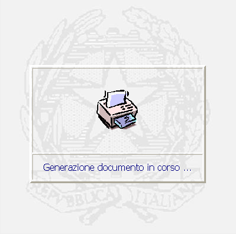
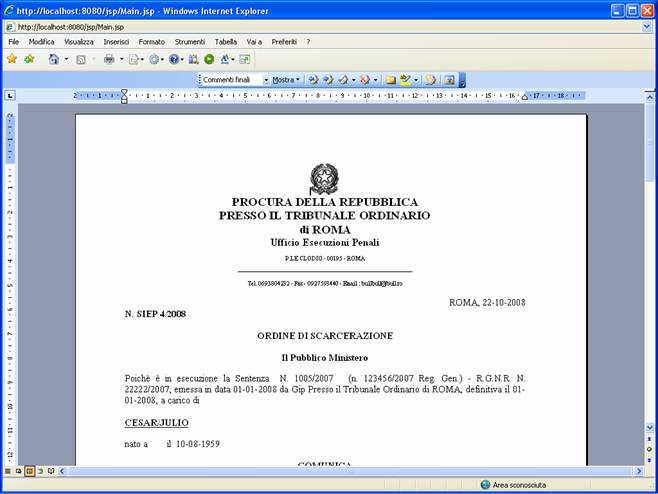
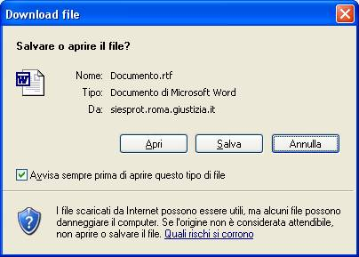
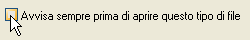
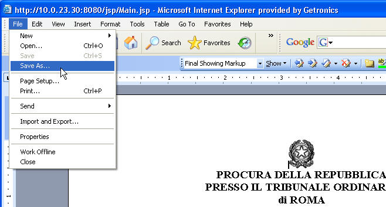
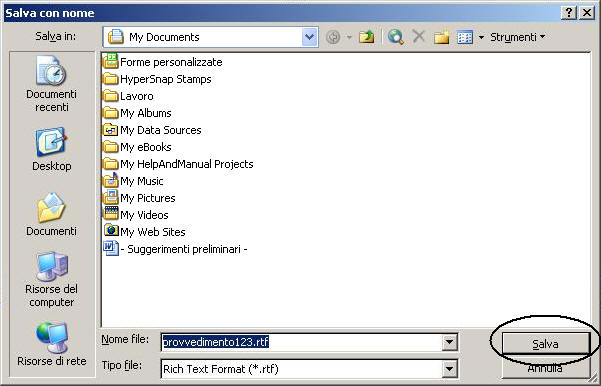

STAMPA
DEL DOCUMENTO:
La funzione,
consente
di generare,
editare e stampare il provvedimento; questo processo è attivabile in
qualsiasi maschera in cui è presente il pulsante
LE MASCHERE VIDEO
La funzione in esame viene realizzata senza la compilazione di alcuna maschera. Una volta richiesto il processo di stampa, il sistema visualizza il seguente messaggio

ed a seguire viene visualizzata la maschera contenete sia il documento stesso che tutte le funzionalità di gestione dell'editor tramite l'applicazione Microsoft Word ;

ATTENZIONE: se il sistema lo prevede, apparirà, prima della maschera contenente il documento, il messaggio di avviso di Download file con l'editor Microsoft Word;

N.B. è consigliabile negare la visualizzazione di questo avviso in modo tale che esso non venga più proposto.
COME FARE PER ...
|
Per negare la visualizzazione dell'avviso di Download File le volte successive, deselezionare il check d'avviso |

|
Nel caso di presenza dell'avviso precedente, cliccare su
|
|
Per salvare il documento sulla postazione dell’utente ed apportarvi delle modifiche occorre, posizionandosi nella maschera che contiene il documento:
|

scegliere la posizione (directory) dove collocare tale documento ed il nome da assegnare al file e cliccare su
;

|
Per stampare il documento, posizionandosi nella maschera che contiene il documento, agire sulla barra funzione di Internet come nella figura seguente: |

|
Per
chiudere la maschera con la visualizzazione del documento cliccare su
|

chiudendo la maschera il sistema ripresenta la maschera di Dettaglio del provvedimento generato dove, se necessario, si potrà provvedere ad eseguire la funzione di Validazione Documento.
 come nella figura seguente
come nella figura seguente